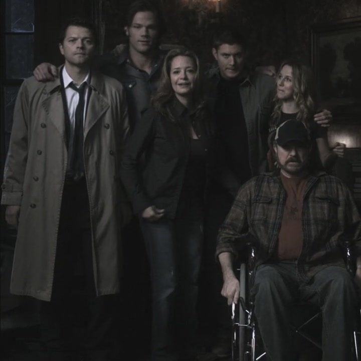

Tudo começa quando os irmãos ainda eram crianças. Sua mãe, Mary Winchester, é morta por uma criatura sobrenatural, fazendo com que o pai, John Winchester, passe a investigar o mundo sobrenatural e a ensinar os filhos a caçar monstros.

demonio de olho amarelo.
Anos depois, Sam tenta deixar essa vida para trás e seguir uma vida normal. Porém, quando seu pai desaparece durante uma caçada, Dean vai atrás do irmão e pede sua ajuda para encontrá-lo. A partir desse momento, os dois voltam a viajar juntos pelo país no famoso Impala 1927 de Dean.

de seu desaparecimento repentino.
Durante as aventuras, Sam e Dean enfrentaram diversos tipos de criaturas, como demônios, fantasmas, vampiros, lobisomens e anjos. Ao longo da série, as caçadas dos irmãos acabam envolvendo acontecimentos cada vez maiores, incluindo o Céu, o Inferno, anjos, demônios e até mesmo o Apocalipse.

Peste, Fome e guerra.
Apesar de todos os perigos, a relação entre os irmãos continua sendo o centro da história. A série mostra a importância da família, da amizade, dos sacrifícios e da luta para proteger aqueles que eles amam.

e Jo, no começo do Apocalipse.